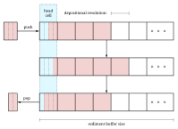

Sediment Buffers
For our models of transport and denudation it is important to remember the facies of the sediment for some time into the past. One way to do this, is to remember all contributions of sediment in a stack. Every time we transport or erode sediment, we can pop parcels from this stack. In a three-dimensional model, we need a 2d grid of stacks. Each stack would have its own memory management (which is computationally expensive), and most resources are spent on areas with very little accretion. (In fact, this is what CarboCAT does. We believe this design choice is the main contributor to the difference in run-time between CarboCAT and CarboKitten).
Instead, we choose a fixed size sediment buffer. Each cell in the buffer represents a parcel of sediment, where we store the relative fractions of each contributing facies. This buffer is only used to determine the facies of disintegrated sediment. The output of the overal model is still the amount of sediment for each iteration.
We can't stress this enough: any inaccuracy in using a fixed size buffer with a chosen granularity only impacts the precision of the composition of transported sediment. Even then, the schema is conservative: no sediment is lost unless erosion is so rampant that it eats through the entire sediment stack. In that case, a simulation should be run with a larger buffer.
Data structure
While the sediment buffer is allocated as a single 4-dimensional array (depth, facies, $x$, $y$), it is best to explain its functioning from the perspective of a single cell in our model. We are left with two dimensions: depth (rows) and facies (columns).
We choose to have the head of our sediment stack always be at the first row. When sediment out-grows the buffer, the deepenst layers are dropped from memory. The head can contain an incomplete amount of sediment, while all rows below the head are either full or empty. When sediment is pushed to the stack and the head row overflows, all rows are copied down one row and the surplus is assigned to the now empty head row. The inverse happens when removing (popping) material from the stack (in computer science stacks are pushed on and popped from). This process is illustrated below.

Above we see a buffer. First we push a parcel of size $3/4$, then we pop an amount of $1/2$. This popped parcel will have different fractions from the pushed one, since it also draws from the half filled row that was in the stack before pushing. In this sense, a small amount of facies mixing will take place, depending on the depositional resolution chosen.
Our implementation is such that each cell in the buffer is contiguous in memory. Thus, copying rows of unstrided memory should be very efficient, although the performance remains to be tested.
Implementation
We define two functions push_sediment! and pop_sediment!. Given a $s \times n$ matrix, where $n$ is the number of facies types and $s$ is the depth of the stack, we can grow and shrink sediment. These functions are unit-free, setting $\Delta z$ to be equal to 1.
@testset "SedimentStack" begin
using CarboKitten.SedimentStack: push_sediment!, pop_sediment!
stack = zeros(Float64, 10, 3)
@test pop_sediment!(stack, 0.0) == [0.0, 0.0, 0.0]
push_sediment!(stack, [5.0, 0, 0])
@test pop_sediment!(stack, 1.5) == [1.5, 0.0, 0.0]
push_sediment!(stack, [0.0, 2.0, 0.0]) # (0 0.5) (0 1) (0.5 0.5) (1 0) ...
@test pop_sediment!(stack, 2.0) == [0.25, 1.75, 0.0]
@test pop_sediment!(stack, 1.5) == [1.25, 0.25, 0.0]
@test pop_sediment!(stack, 0.0) == [0.0, 0.0, 0.0]
end
@testset "SedimentArray" begin
using CarboKitten.SedimentStack: push_sediment!, peek_sediment
sediment = zeros(Float64, 10, 3, 5, 5)
for x in 1:10
production = rand(3, 5, 5)
push_sediment!(sediment, production)
end
a = peek_sediment(sediment, 1.0)
@test all(sum(a; dims=1) .≈ 1.0)
endPushing sediment
The single-cell version of push_sediment! takes as argument col a column (physically speaking a column of sediment) represented by a $s \times n$-matrix and a parcel a $n$-vector.
function push_sediment!(col::AbstractMatrix{F}, parcel::AbstractVector{F}) where F <: Real
@assert size(col, 2) == length(parcel) "column $(size(col)) doesn't match parcel $(size(parcel))"
<<push-sediment>>
endFirst we check if the amount of sediment is larger than the buffer. A warning is printed and the entire buffer filled in the specified fractions.
mass = sum(parcel)
if mass == 0.0
return
end
if mass > size(col)[1]
@warn "pushing a very large parcel of sediment: $mass times depositional resolution"
frac = parcel ./ mass
col .= frac
return
endFirst we determine the total sediment amount $\Delta$, being the sum of the parcel, as well as the amount of sediment in our bucket, the head row.
bucket = sum(col[1, :])
@assert bucket >= 0.0 && bucket <= 1.0If the bucket has enough space left for the parcel, we can just add the parcel to the bucket and return.
if bucket + mass < 1.0
col[1,:] .+= parcel
return
endOtherwise, we compute the normalized fractions frac of facies in the parcel. We add as much sediment as we can to fill the bucket and copy rows down as far as needed.
frac = parcel ./ mass
col[1,:] .+= frac .* (1.0 - bucket)
mass -= (1.0 - bucket)
n = floor(Int64, mass)
col[n+2:end,:] .= col[1:end-n-1,:]If the parcel has enough material left to fill more rows, those are all filled with the fractions in frac. The head row is assigned whatever is left.
na = [CartesianIndex()]
col[2:n+1,:] .= frac[na,:]
mass -= n
col[1,:] .= frac .* massPopping sediment
Similar to push_sediment! we have pop_sediment!. We give pop_sediment! the sedimentary column col and the total amount of sediment we require. There is a bit that we will reuse called pop_fraction, which only works if the amount of popped sediment is lower than the contents of the bucket.
@inline function pop_fraction(col::AbstractMatrix{F}, mass::F) where F <: Real
bucket = sum(col[1,:])
if mass == 0 || bucket == 0
return zeros(F, size(col)[2])
end
@assert mass < bucket "pop_fraction can only pop from the top cell: $(col), $(mass)"
parcel = (mass / bucket) .* col[1,:]
col[1,:] .-= parcel
return parcel
end
function pop_sediment!(col::AbstractMatrix{F}, Δ::F) where F <: Real # -> Vector{F}
<<pop-sediment>>
endWe start by computing the bucket size again. If it is greater than the required amount, we call pop_fraction.
bucket = sum(col[1,:])
@assert bucket >= 0.0
if Δ < bucket
return pop_fraction(col, Δ)
endOtherwise, we start a parcel with the contents of the bucket. Add to that the remaining material in rows below. Now we copy rows from below, setting the bottom $n$ rows to 0. The last step is to call pop_fraction one more time with the remaining required amount.
parcel = copy(col[1,:])
Δ -= bucket
n = floor(Int64, Δ)
if n > (size(col)[1] - 2)
@error "too much material popped of the stack: Δ = $Δ"
parcel .+= sum(col; dims=1)'
col .= 0.0
return parcel
end
parcel .+= sum(col[2:n+1,:]; dims=1)'
col[1:end-n-1, :] = col[n+2:end, :]
col[end-n-1:end, :] .= 0
Δ -= n
parcel .+= pop_fraction(col, Δ)
return parcelPeeking
Instead of popping sediment, we can also peek at the stack with peek_sediment!, which is a non-destructive way to inspect what the returned parcel would be if we were to call pop_sediment! with the same arguments.
SedimentStack impl
module SedimentStack
export push_sediment!, pop_sediment!, peek_sediment
<<sediment-stack-impl>>
function push_sediment!(sediment::AbstractArray{F, 4}, p::AbstractArray{F, 3}) where F <: Real
_, x, y = size(p)
@assert size(sediment, 2) == size(p, 1) "shapes for sediment $(size(sediment)) doesn't match p $(size(p))"
@views for i in CartesianIndices((x, y))
push_sediment!(sediment[:, :, i[1], i[2]], p[:, i[1], i[2]])
end
end
function peek_sediment(col::AbstractMatrix{F}, Δ::F) where F <: Real # -> Vector{F}
if Δ == 0
return zeros(F, size(col)[2])
end
bucket = sum(col[1,:])
if Δ < bucket
parcel = (Δ / bucket) .* col[1,:]
return parcel
end
parcel = copy(col[1,:])
Δ -= bucket
n = floor(Int64, Δ)
parcel .+= sum(col[2:n+1,:]; dims=1)'
Δ -= n
last_bit = (Δ / sum(col[n+2,:])) .* col[n+2,:]
parcel .+= last_bit
return parcel
end
function peek_sediment(sediment::AbstractArray{F,4}, Δ::F) where F <: Real
_, f, x, y = size(sediment)
out = Array{F, 3}(undef, f, x, y)
for i in CartesianIndices((x, y))
out[:, i[1], i[2]] = peek_sediment(@view(sediment[:, :, i[1], i[2]]), Δ)
end
return out
end
function pop_sediment!(cols::AbstractArray{F, 4}, amount::AbstractArray{F, 2}, out::AbstractArray{F, 3}) where F <: Real
@views for i in CartesianIndices(amount)
out[:, i[1], i[2]] = pop_sediment!(cols[:, :, i[1], i[2]], amount[i[1], i[2]])
end
end
end # moduleComponent
@compose module SedimentBuffer
@mixin Boxes, FaciesBase, WaterDepth
using StaticArrays
using Unitful
using ..Common
using CarboKitten.SedimentStack: pop_sediment!, push_sediment!, peek_sediment
export pop_sediment, push_sediment
@kwdef struct Input <: AbstractInput
sediment_buffer_size::Int = 50
depositional_resolution::Amount = 0.5u"m"
end
@kwdef mutable struct State <: AbstractState
sediment_buffer::Array{Float64,4}
sediment_thickness::Array{Height, 2}
end
@constructor _initial_state(input)::State[sediment_buffer, sediment_thickness] = (
sediment_buffer = zeros(Float64, input.sediment_buffer_size, n_facies(input), input.box.grid_size...),
sediment_thickness = zeros(Amount, input.box.grid_size...))
function push_sediment(input::AbstractInput)
res = input.depositional_resolution
n_f = n_facies(input)
n_g = input.box.grid_size
function (state::AbstractState, sediment::Array{Amount, 3})
for i in CartesianIndices(n_g)
total = sum(@view sediment[:, i[1], i[2]])
state.sediment_thickness[i] += total
state.bathymetry[i] += total
v = SVector{n_f, Float64}(sediment[:, i[1], i[2]] ./ res .|> NoUnits)
push_sediment!(view(state.sediment_buffer, :, :, i[1], i[2]), v)
end
end
end
function pop_sediment(input::AbstractInput)
res = input.depositional_resolution
n_g = input.box.grid_size
function (state::AbstractState, amount::Array{Amount, 2}, out::Array{Amount, 3})
for i in CartesianIndices(n_g)
state.sediment_thickness[i] -= amount[i]
state.bathymetry[i] -= amount[i]
v = pop_sediment!(@view(state.sediment_buffer[:, :, i[1], i[2]]), amount[i] ./ res .|> NoUnits)
view(out, :, i[1], i[2]) .= v .* res
end
end
end
endComponent Test
using CarboKitten
using CarboKitten.Components.Common: Amount
import CarboKitten.Components.SedimentBuffer as SB
@testset "Components/SedimentBuffer" begin
input = SB.Input(
box = Box{Periodic{2}}(grid_size=(10, 1), phys_scale=1.0u"m"),
time = TimeProperties(Δt=1.0u"yr", steps=10),
facies = [SB.Facies()],
sediment_buffer_size = 10,
depositional_resolution = 1.0u"m")
state = SB._initial_state(input)
@test size(state.sediment_thickness) == (10, 1)
@test size(state.sediment_buffer) == (10, 1, 10, 1)
push! = SB.push_sediment(input)
pop! = SB.pop_sediment(input)
push!(state, reshape((1:10) .* 0.5u"m" |> collect, (1, 10, 1)))
@test state.sediment_buffer[1, 1, :, 1] == repeat([0.5, 0.0], 5)
# no initial topography, no subsidence
@test state.sediment_thickness ≈ state.bathymetry
buffer = zeros(Amount, 1, 10, 1)
pop!(state, state.sediment_thickness ./ 2, buffer)
@test reshape(state.sediment_thickness, (1, 10, 1)) ≈ buffer
@test state.sediment_buffer[1, 1, :, 1] .% 1.0 ≈ repeat([0.25, 0.5, 0.75, 0.0], 3)[1:10]
# no initial topography, no subsidence
@test state.sediment_thickness ≈ state.bathymetry
end